In order from what's condsidered "easiest" to "most advanced."
Salads is considered the easiest station, as it gets the least amount of bills and doesn't use heat. This makes it ideal as a station for the most inexperienced Recruits who can adapt to the pressure of line, but aren't put in a difficult situation without preparation. Popular items made on this station are: Caesar Salad, Santa Fe Chicken Salad, and Spring Greens + Grains.
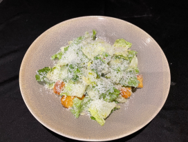 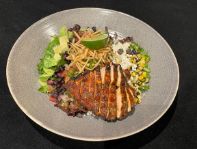 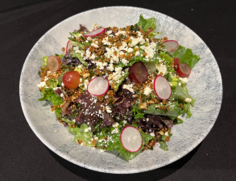
Appetizers is a step above salads because it has more items and uses fryers for prawns, wings, calamari, etc. It can be tedious due to sushi and sushi tacos, which each use a different combination of sauces that are difficult to remember. New Recruits are usually trained on this station most often. My friend, Yolonda, works this station. Favourite items are the Ahi Tuna Poke Bowl, Dynamite Roll, and Seafood Platter.
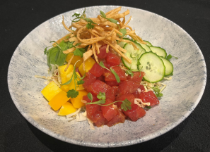 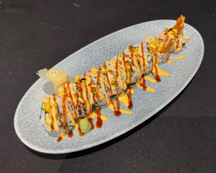 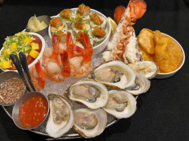Panfry can be seen as the most dangerous station due to the large gas ranges, where fire flares up in your face, and there is a higher risk of being burnt by hot oil. Although it only has four main dishes, it can be difficult to solo, making it the last station new Recruits are usually trained on. The main dishes on this station are Biryani Curry, Fettuccine Alfredo, Hunan Kung Pao, and Truffle Tortellini.
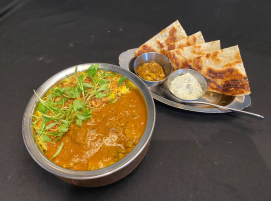 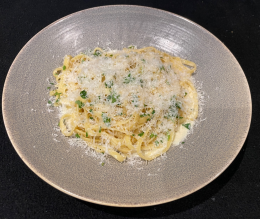 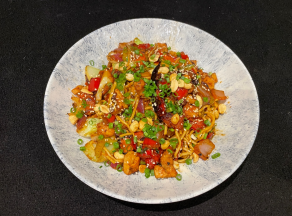 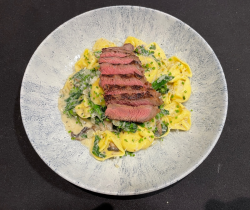Ovens is my favourite station because I was trained on it first, where there is a lot of variety in the things you make: chicken, ribs, salmon, lobster tails, pizzas, and desserts. It is the second hardest station due to the type of items and the heat of a 500° Doyon, but you are closest to the guests and the bar. Popular items on this station are the Cajun Chicken, Spinach Dip, Margherita Pizza and Toffee Cake.
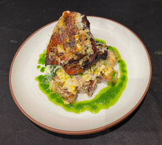 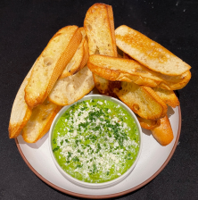 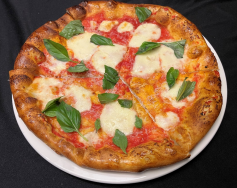 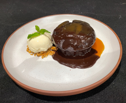Entrées is considered the most difficult station due to having the highest volume bills, where steaks are the trickiest to get right out of all the menu items. This station is also the hottest on line because of the open grill, and it is deemed to be the most stressful. Dani (our Sous 3) and I were trained on Entrées as our second stations. Popular menu items are the Cajun Chicken Cheddar Sandwich, Yucatan Chicken Tacos, and Steak.
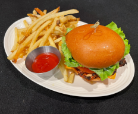 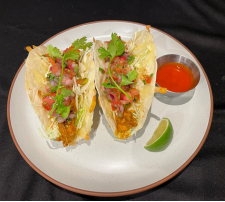 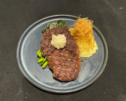